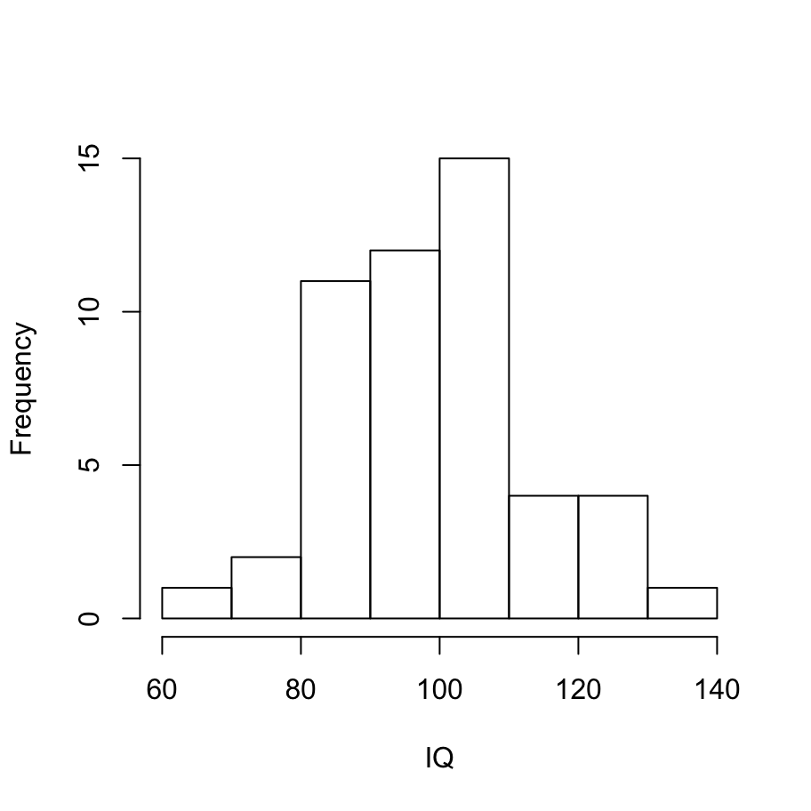
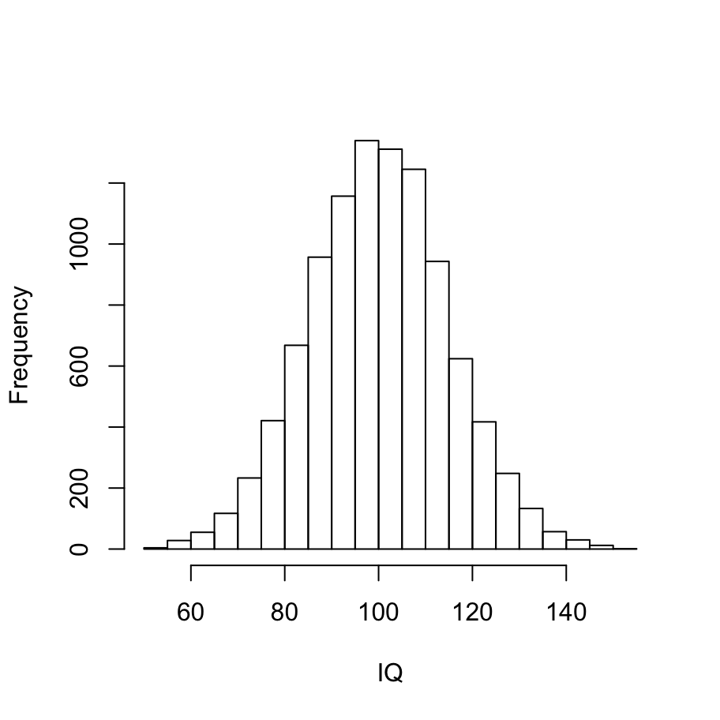

Probability Distributions
99.1 Prelude
R is very often described as a statistical programming environment, because - while it does get used for an incredible variety of purposes - it began its life as a tool for helping statisticians analyse data. As such, it has an unrivalled collection of statistical packages built into it, and I’ll talk a little about some of them later. However, before starting to talk about statistics, it’s very useful to talk about probability distributions and how they are usually implemented in R.
Speaking of which, what exactly is the difference between probability theory and statistics? The two disciplines are closely related but they’re not identical. Probability theory is “the doctrine of chances”. It’s a branch of mathematics that tells you how often different kinds of events will happen. For example, all of these questions are things you can answer using probability theory:
- What are the chances of a fair coin coming up heads 10 times in a row?
- If I roll two six sided dice, how likely is it that I’ll roll two sixes?
- How likely is it that five cards drawn from a perfectly shuffled deck will all be hearts?
- What are the chances that I’ll win the lottery?
Notice that all of these questions have something in common. In each case the “truth of the world” is known, and my question relates to the “what kind of events” will happen. In the first question I know that the coin is fair, so there’s a 50% chance that any individual coin flip will come up heads. In the second question, I know that the chance of rolling a 6 on a single die is 1 in 6. In the third question I know that the deck is shuffled properly. And in the fourth question, I know that the lottery follows specific rules. You get the idea. The critical point is that probabilistic questions start with a known model of the world, and we use that model to do some calculations. The underlying model can be quite simple. For instance, in the coin flipping example, we can write down the model like this: \[ P(\mbox{heads}) = 0.5 \] which you can read as “the probability of heads is 0.5”. As we’ll see later, in the same way that percentages are numbers that range from 0% to 100%, probabilities are just numbers that range from 0 to 1. When using this probability model to answer the first question, I don’t actually know exactly what’s going to happen. Maybe I’ll get 10 heads, like the question says. But maybe I’ll get three heads. That’s the key thing: in probability theory, the model is known, but the data are not.
So that’s probability. What about statistics? Statistical questions work the other way around. In statistics, we do not know the truth about the world. All we have is the data, and it is from the data that we want to learn the truth about the world. Statistical questions tend to look more like these:
- If my friend flips a coin 10 times and gets 10 heads, are they playing a trick on me?
- If five cards off the top of the deck are all hearts, how likely is it that the deck was shuffled?
- If the lottery commissioner’s spouse wins the lottery, how likely is it that the lottery was rigged?
This time around, the only thing we have are data. What I know is that I saw my friend flip the coin 10 times and it came up heads every time. And what I want to infer is whether or not I should conclude that what I just saw was actually a fair coin being flipped 10 times in a row, or whether I should suspect that my friend is playing a trick on me. The data I have look like this: \[ HHHHHHHHHHH \] and what I’m trying to do is work out which “model of the world” I should put my trust in. If the coin is fair, then the model I should adopt is one that says that the probability of heads is 0.5; that is, \(P(\mbox{heads} = 0.5\). If the coin is not fair, then I should conclude that the probability of heads is not 0.5, which we would write as \(P(\mbox{heads} \neq 0.5\). In other words, the statistical inference problem is to figure out which of these probability models is right. Clearly, the statistical question isn’t the same as the probability question, but they’re deeply connected to one another. Because of this, a good introduction to statistical theory will start with a discussion of what probability is and how it works.
99.1.1 What does probability mean?
Let’s start with the first of these questions. What is “probability”? It might seem surprising to you, but while statisticians and mathematicians (mostly) agree on what the rules of probability are, there’s much less of a consensus on what the word really means. It seems weird because we’re all very comfortable using words like “chance”, “likely”, “possible” and “probable”, and it doesn’t seem like it should be a very difficult question to answer. If you had to explain “probability” to a five year old, you could do a pretty good job. But if you’ve ever had that experience in real life, you might walk away from the conversation feeling like you didn’t quite get it right, and that (like many everyday concepts) it turns out that you don’t really know what it’s all about. In the statistic literature there are two qualitatively different ideas about how to define the term:
- The frequentist view defines probability as long-run frequency. Suppose we were to try flipping a fair coin, over and over again, and divide the number of heads \(n_h\) by the total number of coin flips \(n\), yielding \(p_h = n_h/n\) as the observed proportion. The frequentists argue that the only way to meaningfully define the idea of probability is in terms of what happens to this empirically observed proportion a the sample size becomes arbitrarily large (i.e., \(n \rightarrow \infty\)). In the long run, the proportion of heads will eventually converge to 50%. There are some subtle technicalities that the mathematicians care about, but qualitatively speaking, that’s how the frequentists define probability. Probability is a “thing in the world”
- The Bayesian view is often called the subjectivist view, and it is a minority view among statisticians, but one that has been steadily gaining traction for the last several decades. There are many flavours of Bayesianism, making hard to say exactly what “the” Bayesian view is. The most common way of thinking about subjective probability is to define the probability of an event as the degree of belief that an intelligent and rational agent assigns to that truth of that event. From that perspective, probabilities don’t exist in the world, but rather in the thoughts and assumptions of people and other intelligent beings. However, in order for this approach to work, we need some way of operationalising “degree of belief”. One way that you can do this is to formalise it in terms of “rational gambling”, though there are many other ways. Suppose that I believe that there’s a 60% probability of rain tomorrow. If someone offers me a bet: if it rains tomorrow, then I win $5, but if it doesn’t rain then I lose $5. Clearly, from my perspective, this is a pretty good bet. On the other hand, if I think that the probability of rain is only 40%, then it’s a bad bet to take. Thus, we can operationalise the notion of a “subjective probability” in terms of what bets I’m willing to accept. Probability, from this perspective, is a “thing in the head”.
My personal view is much closer to the Bayesian perspective, and I tend to use Bayesian methods myself, but I’ll talk a bit about both approaches in this book. Regardless of which version you prefer, the core mechanics for working with probabilities in R are the same.
99.1.2 Quick reference
The tools for working with probability distributions in R tend to be fairly standardised. If I want to work with a normal distribution, for instance, there are four different functions - rnorm, dnorm, pnorm and qnorm. If I want to work with a uniform distribution, the functions are named runif, dunif, punif and qunif. For a binomial distribution, they are rbinom, dbinom, pbinom and qbinom. The four versions are:
- The r form is a random number generator: you can use it to sample
nrandom outcomes from the distribution. - The d form computes the probability (or probability density) with which you would observe a particular number
xif it is generated from this distribution. - The p form is the cumulative distribution function. You specify a particular value
q, and it tells you the probability of obtaining an outcome smaller than or equal toq. - The q form calculates the quantiles of the distribution. You specify a probability value
p, and gives you the corresponding percentile. That is, the value of the variable for which there’s a probabilitypof obtaining an outcome lower thanq.
99.2 The normal distribution
The normal distribution is the most widely used distribution in statistics, so it’s a natural place to start. For example, IQ scores are roughly normally distributed, and the tests are (supposedly) normed in such a way that the average IQ score is 100 and the standard deviation is 15. So let’s use R to randomly generate a sample of n = 50 IQ scores using the rnorm function.
iq <- rnorm(n = 50, mean = 100, sd = 15) # sample the IQ scores
hist(iq, xlab="IQ",main="") # draw the histogram
You can kind of see the shape of the bell curve with 50 observations, but it’s not super obvious. If we ratchet up the sample size to n = 10000 data points, it becomes a lot more obvious
iq <- rnorm(n = 10000, mean = 100, sd = 15) # sample the IQ scores
hist(iq, xlab="IQ",main="") # draw the histogram
We can draw the bell curve itself by using the dnorm function:
iq <- 40:160
prob <- dnorm(x = iq, mean = 100, sd = 15)
plot(iq, prob, xlab="IQ",ylab="Density", main="", type="l")
The cumulative distribution function looks like this:
iq <- 40:160
cprob <- pnorm(q = iq, mean = 100, sd = 15)
plot(iq, cprob, xlab="IQ",ylab="Cumulative Probability", main="", type="l")
The quantile function is just the inverse of the cumulative distribution (i.e., x and y axes are swapped):
prob <- seq(from = .01, to = .99, by = .01)
q <- qnorm(p = prob, mean = 100, sd = 15)
plot(prob, q, xlab="Probability",ylab="Quantile", main="", type="l")